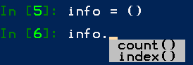

- Tuple (元组)与列表类似，元组的元素 不能修改
- 元组通常保存 不同类型 的数据
- 元组用()定义
- info_tuple = ("张三"， 18， 1.75)
定义
元组名 = (元素1, 元素2, 元素3)
- 空元组 元组名 = () ，很少使用，因为定义后，元组无法修改
- 只有一个元素的元组， 元组名 = (元素1,) 注：元素后 必须 添加 , 逗号，否则创建的是一个变量

1 # 定义一个元组
2 info_tuple = ("张三", 18, 1.75)
3 print(info_tuple) # ('张三', 18, 1.75)
4 print(info_tuple[1]) # 18
5 print(info_tuple.index(18)) # 1
6 print(info_tuple.count("张三")) # 1 （计算某个元组在元组中的个数）
格式化字符串后面的(),本质上就是一个元组
1 print("%s 年龄是 %d 身高是 %.2f " % ("张三", 18, 1.75))
1 info_tuple = ("张三", 18, 1.75)
2 print("%s 年龄是 %d 身高是 %.2f " % info_tuple) # 张三 年龄是 18 身高是 1.75 1 info_str = "%s 年龄是 %d 身高是 %.2f " % info_tuple
2 print(info_str) # 张三 年龄是 18 身高是 1.75
- list(元组)
- tuple(列表)
1 info_tuple = ("张三", 18, 1.75)
2 print(list(info_tuple)) # ['张三', 18, 1.75]
3 info_list = ["张三"]
4 print(tuple(info_list)) # ('张三',)